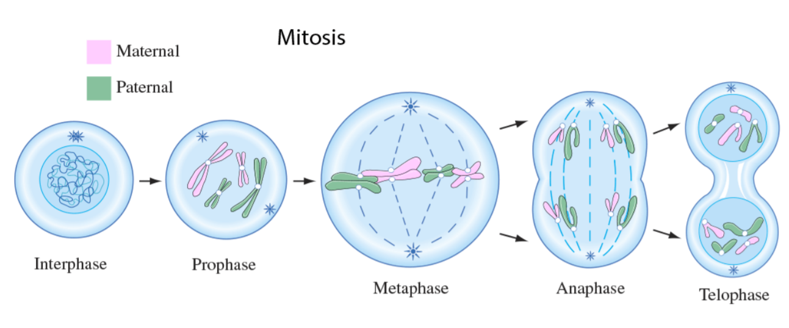
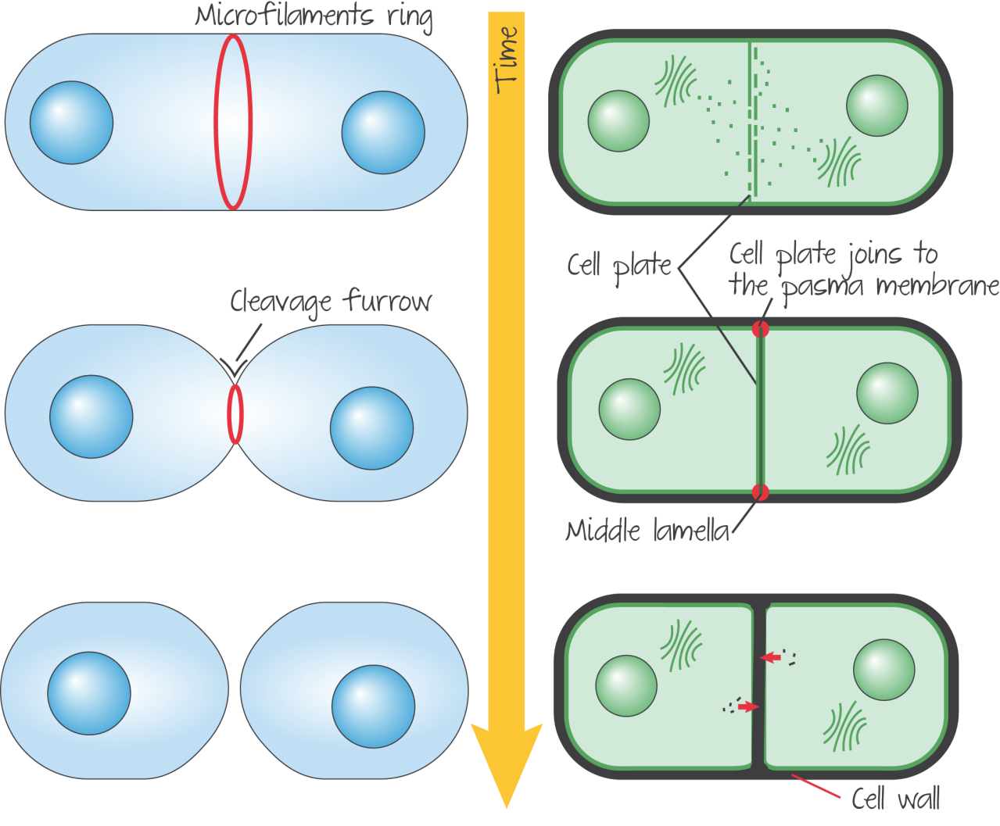

การแบ่งเซลล์ (Cell Division) คือ การเพิ่มจำนวนของเซลล์ (cell) ในสิ่งมีชีวิต เพื่อการเจริญเติบโตและรักษา ซ่อมแซมร่างกายส่วนที่สึกหรอ รวมถึงสร้างเซลล์สืบพันธุ์ที่คงไว้ซึ่งสารพันธุกรรม ซึ่งทำหน้าที่ควบคุมลักษณะ และการแสดงออกที่เป็นเอกลักษณ์ของชนิดพันธุ์
การแบ่งเซลล์แบบไมโทซิส (Mitosis) คือ การแบ่งเซลล์เพื่อเพิ่มจำนวนของเซลล์ร่างกาย (Somatic Cell) ในสิ่งมีชีวิตหลายเซลล์ (Multicellular Organism) เช่น พืช สัตว์ และมนุษย์ และเป็นการแบ่งเซลล์เพื่อการสืบพันธุ์ในสิ่งมีชีวิตเซลล์เดียว (Unicellular Organism) และการสร้างเซลล์สืบพันธุ์ในพืช การแบ่งเซลล์แบบไมโทซิสเป็นการเพิ่มจำนวนเซลล์จาก 1 เซลล์ดั้งเดิมเพิ่มจำนวนขึ้นเป็น 2 เซลล์ โดยที่เซลล์เกิดใหม่ยังคงมีคุณสมบัติเหมือนเซลล์ต้นแบบทุกประการ ทั้งชนิดและจำนวนของโครโมโซม (Chromosome)
การแบ่งเซลล์แบบไมโทซิสสามารถจำแนกออกเป็น 5 ระยะหรือที่เรียกกันว่า “วัฏจักรเซลล์” (Cell Cycle) ดังนี้
1. ระยะอินเตอร์เฟส (Interphase) เป็นระยะพักและเตรียมการแบ่งเซลล์ กิจกรรมของเซลล์ในระยะนี้มีการเจริญเติบโตเต็มที่ มีกระบวนการเมทาบอลิซึม (Metabolism) สูง เซลล์สะสมวัตถุดิบสำหรับการสังเคราะห์สารต่างๆ และที่สำคัญคือ การสังเคราะห์สารพันธุกรรมหรือดีเอ็นเอ(DNA) เพิ่มขึ้น ทำให้มีการจำลองตัวของโครโมโซมเพิ่มขึ้น 1 ชุด เพื่อเตรียมพร้อมสำหรับการแบ่งตัวของนิวเคลียสและไซโทพลาซึมในขั้นตอนต่อไป
2. ระยะโพรเฟส (Prophase) : โครงสร้างของโครโมโซมจะปรากฏให้เห็นเป็นรูปตัวเอกซ์ (X) ชัดเจนขึ้น โดยในเซลล์ของสัตว์มีการเคลื่อนที่ของเซนทริโอล (Centriole) ซึ่งเคลื่อนตัวไปอยู่บริเวณขั้วตรงข้ามทั้ง 2 ด้านของเซลล์ ก่อนสร้างเส้นใยโปรตีนที่เรียกว่า “ไมโทติกสปินเดิล” (Mitotic Spindle) หรือ “สปินเดิลไฟเบอร์” (Spindle Fiber) ไปยึดเกาะเซนโทรเมียร์ (Centromere) หรือบริเวณจุดกึ่งกลางของโครโมโซม ซึ่งในเซลล์พืชจะมีขั้วตรงกันข้าม (Polar Cap) ทำหน้าที่แทนเซนทริโอล โดยในปลายระยะนี้ เยื่อหุ้มนิวเคลียส (Nuclear Membrane) และนิวคลีโอลัส (Nucleolus) ภายในเซลล์จะค่อย ๆ สลายตัวไป
3. ระยะเมทาเฟส (Metaphase) : เป็นระยะที่เส้นใยสปินเดิลหดตัวและดึงให้โครโมโซมมาเรียงตัวอยู่ร่วมกันในแนวกึ่งกลางของเซลล์ และเป็นช่วงเวลาที่โครโมโซมมีการหดตัวลงสั้นที่สุด เพื่อเตรียมพร้อมสำหรับการแบ่งตัวและการเคลื่อนที่ ส่งผลให้ระยะเมทาเฟสเป็นช่วงเวลาที่เหมาะสมแก่การนับจำนวน ศึกษารูปร่าง และความผิดปกติของโครโมโซม (Karyotype) โดยโครโมโซมเริ่มมีการเคลื่อนที่แยกออกจากกันในช่วงปลายของระยะนี้
4. ระยะแอนาเฟส (Anaphase) : เป็นระยะที่เส้นใยสปินเดิลหดสั้นลงจนทำให้โครมาทิด (Chromatid) หรือ แท่งแต่ละแท่งในคู่โครโมโซมถูกดึงแยกออกจากกันไปอยู่บริเวณขั้วในทิศทางตรงกันข้าม โครโมโซมภายในเซลล์จะเพิ่มจำนวนขึ้นเป็น 2 เท่า ซึ่งถือเป็นกระบวนการแบ่งตัว เพื่อสร้างเซลล์ใหม่ขึ้น 2 เซลล์ ซึ่งระยะแอนาเฟสเป็นระยะที่ใช้เวลาสั้นที่สุดในขั้นตอนทั้งหมด
5. ระยะเทโลเฟส (Telophase) : เป็นระยะที่โครมาทิดซึ่งแยกออกจากกันหรือที่เรียกว่า “โครโมโซมลูก” (Daughter Chromosome) เกิดการรวมกลุ่มกันบริเวณขั้วตรงข้ามของเซลล์ จากนั้นโครโมโซมลูกแต่ละแท่งจะคลายตัวออกเป็นเส้นใยโครมาทิน (Chromatin) ขณะเดียวกันเส้นใยสปินเดิลจะละลายตัวไป เกิดนิวคลีโอลัสและเยื่อหุ้มนิวเคลียสขึ้นอีกครั้งล้อมรอบเส้นใยดังกล่าว ดังนั้นตอนปลายของระยะนี้ จะเห็นเซลล์มีนิวเคลียสเพิ่มขึ้นเป็น 2 ส่วน
การแบ่งเซลล์ แบบไมโอซิส (Meiosis) คือการเพิ่มจำนวนเซลล์ในสิ่งมีชีวิต ที่มีความซับซ้อนและมีขั้นตอนมากขึ้น เพื่อการสร้างเซลล์สืบพันธุ์ เป็นการเพิ่มจำนวนเซลล์จากเซลล์ดั้งเดิม 1 เซลล์ ก่อกำเนิดเซลล์ใหม่ 4 เซลล์ โดยภายในเซลล์เหลือจำนวนโครโมโซมเพียงครึ่งเดียว และจะกลับมารวมกันมีโครโมโซมเท่าเดิมเมื่อเสร็จสิ้นกระบวนการปฏิสนธิระหว่างเซลล์สืบพันธุ์
เมื่อเกิดการปฏิสนธิหรือเข้ากระบวนการผสมพันธุ์จะเกิดการเปลี่ยนแปลงภายใน สารพันธุกรรม หรือการแปรผันทางพันธุกรรม (Gene Variation) ซึ่งเป็นจุดกำเนิดของการพัฒนาความหลากหลายทางชีวภาพ และวิวัฒนาการของสิ่งมีชีวิต
ขั้นตอนของการแบ่งเซลล์แบบไมโอซิสสามารถจำแนกออกเป็น 2 ขั้นตอน โดยในแต่ละขั้นตอนมีด้วยกัน 5 ระยะเช่นเดียวกับการแบ่งเซลล์แบบไมโทซิส คือ ระยะอินเตอร์เฟส (Interphase) โพรเฟส (Prophase) เมทาเฟส (Metaphase) แอนนาเฟส (Anaphase) และเทโลเฟส (Telophase) ดังนี้
โครโมโซมคู่เหมือนที่แนบชิดติดกันจะมีช่วงบริเวณปลายไขว้สลับกัน เป็นปรากฏการณ์การเปลี่ยนแปลงชิ้นส่วนของโครมาทิด (Crossing Over) ระหว่างโครโมโซมคู่เหมือนในบริเวณดังกล่าว ซึ่งทำให้เกิดการผันแปรของยีนในสิ่งมีชีวิตรุ่นต่อไป
การแบ่งเซลล์จะดำเนินต่อไป โดยไม่สิ้นสุดลงเมื่อเสร็จการให้กำเนิดเซลล์ใหม่ 2 เซลล์เหมือนการแบ่งเซลล์แบบไมโทซิส แต่จะเริ่มการแบ่งเซลล์แบบไมโอซิสในขั้นที่ 2 ต่อไปเลยทันที
การเกิดร่องแบ่ง (Furrow Type) ในเซลล์สัตว์ โดยเยื่อหุ้มเซลล์จะคอดกิ่วจากทั้ง 2 ด้านเข้าสู่ใจกลางเซลล์ จากการเคลื่อนตัวของไมโครฟิลาเมนท์ (Microfilament) หรือเส้นใยโปรตีนที่อยู่ใต้เยื่อหุ้มเซลล์ ทำการแบ่งไซโทพลาซึมของเซลล์สัตว์ออกเป็น 2 ส่วน สุดท้ายเกิดเป็นเซลล์ใหม่ขึ้นจำนวน 2 เซลล์
การสร้างผนังกั้น (Cell Plate Type) ในเซลล์พืช เกิดเซลล์เพลท (cell plate) ขึ้นตรงบริเวณกึ่งกลางเซลล์ ก่อนขยายตัวออกไปทั้ง 2 ด้านของเซลล์ กลายเป็นผนังเซลล์ (Cell Wall) ซึ่งแยกนิวเคลียสออกจากกัน หลังจากการแบ่งตัวของนิวเคลียส การก่อตัวขึ้นของผนังเซลล์ทำให้การแบ่งไซโทพลาซึมในขั้นตอนสุดท้ายเสร็จสมบูรณ์
